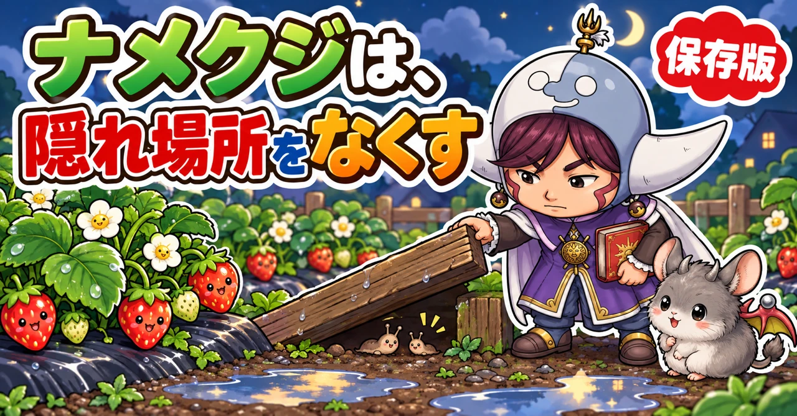
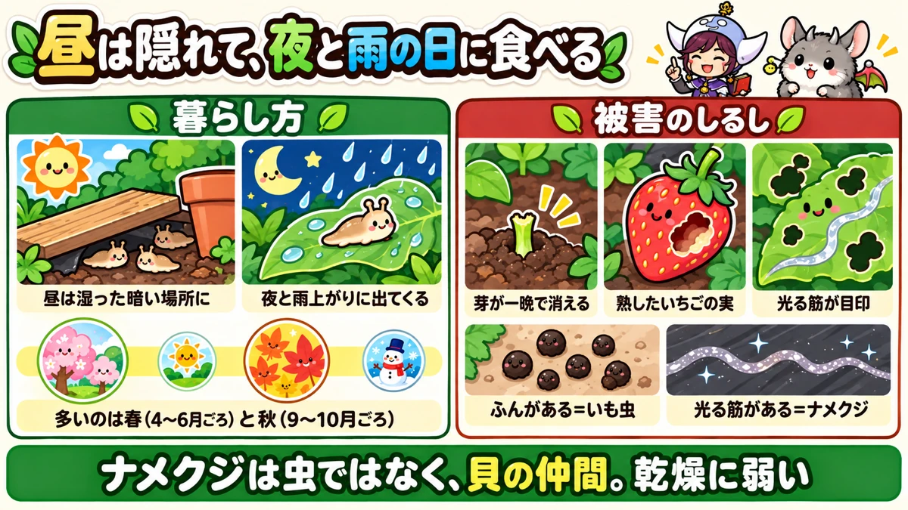
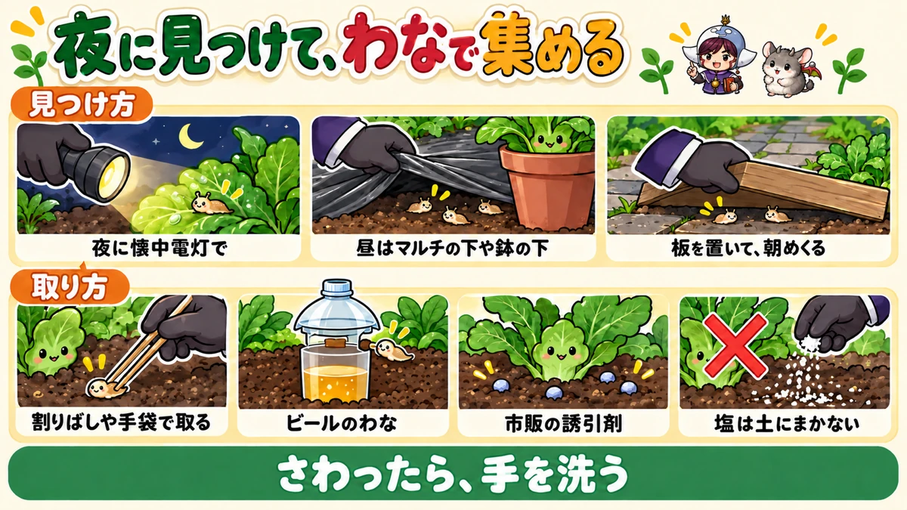
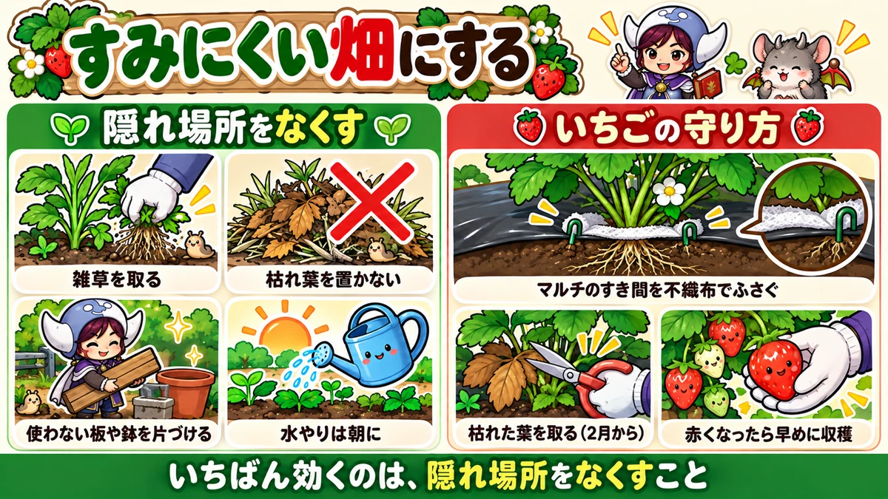

ナメクジ対策の決定版｜夜の見つけ方、ビールのわな、隠れ場所をなくす予防、いちごの守り方

📖 この記事の目次
この記事で分かること
- ナメクジは、虫ではなく、貝の仲間です。殻がなく、乾燥に弱いので、昼は湿った暗い場所に隠れ、夜や雨上がりに出てきて野菜を食べます。
- 新芽、生えたばかりの芽、苗、熟したいちごなど、やわらかいところを好みます。食べ跡のまわりに、乾くと銀色に光る筋が残るのが目印です。
- 多いのは、湿気の多い春（4〜6月ごろ）と秋（9〜10月ごろ）。
- 見つけるなら、夜に懐中電灯を持って見回るか、雨上がり。昼はマルチの下や、板・ブロック・鉢の下を見ます。
- 取るほかに、ビールのわなや、市販の誘引剤があります。
- いちばん効く予防は、隠れ場所をなくすこと。雑草、枯れ葉、使っていない板や鉢を片づけ、風通しをよくします。
- ナメクジにさわったら、手を洗います。食べられた野菜は、その部分を取り除き、よく洗ってから使います。
朝、畑に来てみたら、昨日芽を出したばかりのいんげんが、根元を残して消えている。いちごの赤い実に、えぐられたような穴があいている。まわりを見ると、マルチの上に、光る筋がうねうねと残っている。家庭菜園で、よく出会う光景です。
ナメクジは、昼にはほとんど姿を見せないので、「何に食べられたのか分からない」と悩むことの多い相手です。しかも、ぬるぬるした見た目から、さわるのも気が進まず、対策が後回しになりがちです。けれども、ナメクジの暮らし方を知っていれば、手を打つ場所と時間ははっきりしています。この記事では、ナメクジの暮らし方から、被害の見分け方、見つけ方、取り方、予防、いちごの守り方、さわるときの注意まで、順番に書いていきます。よく似た悩みの、カタツムリとダンゴムシについても、最後にまとめておきます。
早見：ナメクジ対策の基本
被害のしるし
- 新芽、生えたばかりの芽、苗の葉が、ふちから不規則に食べられている
- 葉に、ふちの丸い、不ぞろいな穴があく
- 熟したいちごの実に、えぐられたような穴
- 食べ跡のまわりやマルチの上に、乾くと銀色に光る筋が残る
多い時期と時間
- 春（4〜6月ごろ）と秋（9〜10月ごろ）、特に梅雨どきや雨が続くころ
- 夜、雨上がり、くもりで湿った日
隠れている場所
- マルチの下、マルチの穴のすき間
- 板、ブロック、石、植木鉢やプランターの下
- 雑草の根元、枯れ葉や刈った草の下
- プランターの底や、受け皿のまわり
やること
- 夜か雨上がりに見回って、見つけたら取る
- ビールのわなや、市販の誘引剤を使う
- 隠れ場所をなくす（雑草、枯れ葉、使っていない板や鉢を片づける）
- いちごは、マルチの穴のすき間を不織布でふさぐ
- さわったら手を洗い、食べられた野菜はよく洗う

ナメクジという生き物
虫ではなく、貝の仲間
ナメクジは、虫のように見えますが、実はカタツムリと同じ貝の仲間です。カタツムリの殻がなくなったような姿をしています。殻がないぶん、体の水分を守る手段が少なく、乾燥にとても弱い生き物です。
体の表面は、ぬるぬるした粘液でおおわれています。この粘液で体の乾燥を防ぎながら、ゆっくりはって移動します。はったあとに粘液が残り、それが乾くと、銀色に光る筋になります。
夜と雨の日に動く
乾燥に弱いので、日の照る昼間は、湿った暗い場所にじっと隠れています。夜になって空気が湿ってくると出てきて、野菜を食べます。雨上がりや、くもりで湿った日には、昼間でも動いていることがあります。
においをかぎ分ける力が発達していて、においを頼りに食べ物を探すと言われています。
1匹で卵を産める
ナメクジは、1匹の体に、オスとメスの両方のしくみを持っています。2匹が出会えば、両方が卵を産むことができます。
卵は、半透明から白っぽい、小さな丸い粒で、いくつかまとまって産みつけられます。産む場所は、土の中や、鉢の底、マルチの下、枯れ葉の下など、暗く湿った場所です。
何年も生きる
ナメクジは、数年生きると言われています。冬も、土の中や物の下でじっとして過ごします。一度すみついた畑では、毎年出てくることになりやすいので、数を減らすことと、すみにくい畑にすることの両方が大切です。
被害の出方
やわらかいところを食べる
ナメクジは、植物のやわらかいところが好きです。
- 生えたばかりの芽（いんげん、豆の仲間、葉物など）
- 植えたばかりの苗の葉
- 株の先の新芽
- 熟したいちごの実
- 花びら
生えたばかりの芽は、一晩で食べつくされて、消えてしまうことがあります。新芽を食べられると、そこから先が育たなくなります。
被害を受けやすい野菜
- いちご：熟した実が食べられやすい
- 白菜、キャベツ、大根、小松菜などのアブラナの仲間
- レタス
- なす、トマト、ピーマンなどの苗
- いんげんや豆の仲間の、生えたばかりの芽
- 花壇の花
株が大きくなれば、被害は軽くなる
ナメクジの被害がいちばん大きいのは、芽が出たばかりのころと、苗を植えたばかりのころです。株が大きく育てば、葉を少し食べられても、株全体が弱ることは少なくなります。だから、対策に力を入れるのは、「芽が出てから」「植えてから」の数週間です。
ただし、いちごの実や、白菜・キャベツの外葉の内側、レタスの葉の重なりなど、育ってからも狙われる場所があります。収穫の時期にも、見回りは続けます。
食べ跡の特徴
ナメクジの食べ跡は、葉のふちや、葉の真ん中に、ふちの丸い、不ぞろいな穴があく形になることが多いです。そして、食べ跡のまわりや、株元、マルチの上に、光る筋が残っています。
朝、食べ跡を見つけたら、まずこの光る筋を探してください。光る筋があれば、ナメクジかカタツムリが来ていると考えてよいでしょう。
ほかの虫との見分け方
夜に食べる虫は、ほかにもいます。
- ナメクジ、カタツムリ：食べ跡のまわりに光る筋。ふんは目立たない
- ヨトウムシなどのいも虫：葉の上やマルチの上に、黒や緑の粒のふん。光る筋はない
- ネキリムシ：苗が地ぎわでかじり切られて倒れる
- ダンゴムシ：生えたばかりの芽や、地面に近い葉、実の地面にふれた部分を食べる。株元に何匹も集まっている
食べ跡だけで迷ったら、「光る筋があるか」「ふんがあるか」の2つを見ると、見分けやすくなります。
被害が出やすい場所
同じ畑の中でも、ナメクジの被害が出やすい場所と、出にくい場所があります。
- 畑のはしの、草むらや塀ぎわ、建物の陰に近いところ
- 日当たりが悪く、土がいつも湿っているところ
- 水はけが悪く、雨のあとに水がたまりやすいところ
- 堆肥の山や、野菜くずを積んでいる場所の近く
- 板やブロック、植木鉢などが置いてあるところの近く
毎年同じ場所で被害が出るなら、その近くに隠れ場所があると考えて、まわりを探してみてください。
多い時期
春と秋、湿気の多いころ
ナメクジは、1年を通していますが、特に多く見られるのは、湿気の多い春（4〜6月ごろ）と秋（9〜10月ごろ）です。梅雨どきや、雨が続いたあとは、特に活発になります。
真夏の暑く乾いた時期や、真冬の寒い時期は、隠れ場所でじっとしていて、あまり出てきません。ただし、夏でも雨の多い日や、水やりで湿った場所では出てきます。
春の前から備える
春に暖かくなると、冬を越したナメクジが動き出し、卵もかえって、数が増えていきます。いちごの実が赤くなる春に被害が出るのは、ちょうどこの時期と重なるからです。
被害が出てからでは、数を減らすのに手間がかかります。いちごなど、春に守りたい野菜がある場合は、2月ごろから、隠れ場所の片づけなどの準備を始めておくと安心です。
月ごとにやること（一般的な地域の目安）
- 1〜2月：ナメクジは物の下や土の中でじっとしている。畑に置いたままの板や鉢を片づける。いちごの枯れた葉を取る
- 3月：暖かい雨の日に動き出す。隠れ場所の片づけを終え、いちごのマルチのすき間をふさぐ
- 4〜6月：いちばん多い時期。夜と雨上がりの見回り、わなや誘引剤。いちごの実は早めに収穫。タネまきや苗の植えつけのあとは特に注意
- 7〜8月：暑く乾いた日は少ない。雨の多い日や、水やりで湿った場所では出てくる
- 9〜10月：秋の長雨のころ、再び多くなる。秋にまいた葉物の芽、植えたばかりのキャベツや白菜の苗を守る
- 11〜12月：寒くなると動きが鈍る。収穫の終わった場所の残さや枯れ葉を片づけ、冬の隠れ場所を減らす
見つけ方
夜に懐中電灯で見回る
いちばん確実なのは、暗くなってから懐中電灯を持って畑を見回ることです。昼には見つからなかったナメクジが、葉の上や株元を、ゆっくりはっているのが見つかります。家の庭やベランダの菜園なら、夜の見回りは手軽にできます。
光る筋をたどる
朝、光る筋を見つけたら、その筋がどこから来て、どこへ向かっているかをたどってみます。筋の先に、マルチのすき間や、板の下、草むらなど、ナメクジの隠れ場所が見つかることがあります。隠れ場所が分かれば、そこを片づけるか、そこでまとめて取ることができます。
雨上がりに見回る
雨上がりや、湿ったくもりの日は、昼間でもナメクジが出てきていることがあります。雨がやんだら、株元や葉の裏、マルチの上を見てみてください。
昼は、隠れ場所をのぞく
昼間は、隠れ場所をのぞいて探します。
- マルチのすそを少しめくって、下を見る
- マルチの植え穴のまわりのすき間をのぞく
- 畑に置いてある板やブロック、石、植木鉢を持ち上げて、下を見る
- 雑草の根元や、枯れ葉、刈った草をめくる
隠れ場所には、ナメクジだけでなく、卵がまとまって産みつけられていることもあります。半透明から白っぽい小さな粒のかたまりを見つけたら、取り除きます。
板を置いて、朝めくる
ナメクジが隠れたくなる場所を、わざと作って集める方法もあります。畑の通路などに、板や、ぬらした新聞紙、段ボールなどを置いておくと、夜に動いたナメクジが、朝になってその下に隠れます。朝、めくって、集まったナメクジを取ります。
ただし、置きっぱなしにすると、そこがすみかになってしまいます。毎朝めくって取ること、使い終わったら片づけることが大切です。

取り方
手で取る
見つけたナメクジは、割りばしやピンセット、使い捨ての手袋などを使って取ります。素手ではさわらないようにします（理由は、あとの「さわるときの注意」に書きます）。取ったナメクジは、袋に入れて口をしばるなどして、畑に戻らないようにします。
ビールのわな
ナメクジは、ビールのにおいに引き寄せられる、とよく言われます。これを使ったわなです。
1．空のペットボトルを、くびれた部分で切って、底の側を容器にします。側面に、ナメクジが入れるくらいの穴を数か所あけます。
2．容器の底にビールを少し入れます。
3．容器を、穴の下あたりまで土に埋めて、ナメクジが入りやすいようにします。
4．切り取ったペットボトルの上の部分を、屋根のようにかぶせて、雨水が入らないようにします。
5．数日ごとに中を見て、入ったナメクジを片づけ、ビールを入れかえます。
本物のビールにはよく集まった一方、発泡酒などではあまり集まらなかった、という試みもあります。わなの中はにおいが強くなるので、片づけるときは手袋をして、袋に入れて捨てます。
わなを置くときのこつ
- 守りたい株のすぐ横ではなく、少し離れた通路や、隠れ場所と株の間に置く
- 雨水が入るとビールがうすまるので、屋根をつける
- 畑の広さに合わせて、数か所に置く
- 数日ごとに中を片づけ、ビールを入れかえる。においが強くなりすぎると、ほかの虫も集まる
- 効き目は、捕まえた数で確かめる。数が減ってきたら、隠れ場所の片づけがうまくいっているしるし
市販の誘引剤
ナメクジやカタツムリ用の、粒状の誘引剤が市販されています。株元にまいておくと、ナメクジが野菜より先にそれを食べ、やがて食べるのをやめて数が減っていく、というしくみのものです。
成分に、リン酸第二鉄という、自然界にもある物質を使ったものがあり、比較的安全性が高いと言われています。効き目が出るまでに少し時間がかかるかわりに、野菜を食べられる被害を防ぐ効果があったという試験もあります。使う場合は、ラベルの使い方と、使える場所を必ず確かめてください。
誘引剤を使うときの注意
- 株元に、ラベルに書かれた量を、ぱらぱらと少しずつまく。山盛りにしない
- 雨で流れたり、ふやけたりしたら、まき直す
- 小さな子どもやペットの手の届くところでは、特に気をつけて使う
- 野菜の葉や実に、直接かからないようにまく
塩や灰をかけるのは
ナメクジに塩をかけると縮んでしまうことはよく知られています。目の前のナメクジを退治するのには使えますが、畑の土や株元に塩をまくのはやめてください。塩分が土に残ると、野菜の根が水を吸えなくなり、育ちが悪くなります。
草木灰や石灰を株元にまいて、ナメクジを寄せつけないようにする方法も紹介されます。粉がナメクジの体の粘液を吸い取る、という考え方です。ただ、雨や水やりで湿ると効き目はなくなりますし、石灰は土の性質も変えるので、まきすぎには注意します。
予防：すみにくい畑にする
隠れ場所をなくす
ナメクジ対策でいちばん効くのは、昼間の隠れ場所をなくすことです。隠れる場所がなければ、畑にすみつきにくくなります。
- うねのまわりや株元の雑草を、こまめに取る
- 枯れた葉や、刈った草、野菜くずを、株元やうねの上に置きっぱなしにしない
- 使っていない板、ブロック、植木鉢、ビニールなどを、畑に置きっぱなしにしない
- 株元の古い葉や、地面にふれている葉を取る
風通しと水はけをよくする
じめじめした場所ほど、ナメクジは集まります。株が混みあっていたら、葉を整理して風を通します。水はけの悪い場所は、うねを高くするなどして、水がたまらないようにします。
水やりは、夕方より朝に行うと、夜に土の表面が湿りすぎるのを防げます。夜に土がずっと湿っていると、ナメクジが動きやすくなるからです。
マルチのすき間をふさぐ
マルチの下は、暗くて湿っていて、ナメクジにとって居心地のよい隠れ場所です。マルチの植え穴のすき間から出入りして、株を食べます。
守りたい株は、植え穴のまわりのすき間を、不織布などでふさいでおきます（いちごの守り方で、くわしく書きます）。
においで遠ざける方法
コーヒーの出がらしを株元にまく、木酢液や竹酢液をうすめて葉にかける、といった方法も紹介されています。においでナメクジを遠ざける、という考え方です。
効き目は限られていて、雨で流れてしまうので、くり返す必要があります。コーヒーの出がらしは、たくさん土にまくと、野菜の育ちに影響することがあるので、少量にとどめます。

苗を植えるときの守り方
植えたばかりの苗は、葉がやわらかく、ナメクジに狙われやすい時期です。
- 買ってきた苗のポットの底に、ナメクジがついていないか見てから植える
- 植えた苗のまわりの雑草や枯れ葉を片づけておく
- 植えてから数日は、夜か雨上がりに見回る
- 被害が心配な場所では、株元に市販の誘引剤を少しまいておく
キャベツなどの苗は、株元に細長い不織布を巻いて、マルチの植え穴のすき間をふさいでおく方法もあります。いちごと同じ考え方です。
タネまきのときの守り方
いんげんや豆の仲間、葉物などは、芽が出た直後にナメクジに食べられて、芽が消えてしまうことがあります。鳥のしわざかと思って不織布をかけたのに、まだ食べられる、という場合は、不織布の中にナメクジがいることを疑います。食べ跡のまわりに光る筋がないか、見てみてください。
- 芽が出るころは、夜に見回る
- まいた場所のまわりの隠れ場所（枯れ葉、刈った草、板）を片づける
- 被害が続く場所では、ポットで苗を育て、本葉が出てしっかりしてから植える
芽がある程度大きくなれば、食べられても全滅することは少なくなります。いちばん危ないのは、芽が出てから数日の間です。
天敵もいる
ナメクジを食べる生き物もいます。カエルやヒキガエル、地面を歩き回るオサムシの仲間、鳥などです。畑のすみに少し草の茂った場所や、石を積んだ場所があると、こうした生き物がすみつきやすくなります。
ただし、そうした場所はナメクジの隠れ場所にもなります。野菜を育てるうねのまわりはすっきりさせ、天敵のすみかは畑のはしに、と場所を分けて考えます。
いちごの守り方
2月から始める
いちごは、ナメクジの被害がとても出やすい野菜です。熟した赤い実が、ナメクジの好物だからです。実が赤くなる春に備えて、2月ごろから、次の準備をしておきます。
1．枯れた葉を取り、葉の裏を見る
冬を越したいちごは、外側の葉が枯れています。2月に入ったら、すっかり枯れた葉を、はさみで根元から取り除きます。株元の風通しがよくなり、ナメクジの隠れ場所が減ります。
あわせて、葉の裏を見て、ナメクジの卵がついていないか確かめます。
2．マルチの穴のすき間を不織布でふさぐ
ナメクジは、マルチの下に隠れていて、植え穴のすき間から出てきて実を食べます。そこで、植え穴のまわりに、細長く折った不織布を巻いて、マルチと土の間のすき間をふさぎます。葉を不織布の上に出し、不織布はピンなどで留めます。
不織布は、実がなったときのクッションにもなり、実が土や泥でよごれるのも防げます。
コーヒーのにおいをしみこませた不織布を使う方法
マルチのすき間をふさぐ不織布に、コーヒーのにおいをしみこませておく方法もあります。
1．濃いめにいれたコーヒーをバケツに入れます。
2．30cm×50cmほどに切った不織布を入れ、手でもみながら、まんべんなくしみこませます。
3．取り出して、よく乾かします。
4．不織布の半分くらいまで切りこみを入れ、いちごの株元をぐるりと囲むように巻き、マルチの植え穴のすき間に、指で奥まで差しこみます。
コーヒーのにおいでナメクジを遠ざけながら、すき間もふさげる、という考え方です。においで遠ざける効き目は限られるので、すき間をふさぐことのほうが大切だと考えてください。
3．株元の雑草を取る
株元の雑草は、ナメクジの隠れ場所や、卵を産む場所になります。小さいうちに、根から取っておきます。
4．実は早めに収穫する
熟した実を長く置いておくほど、食べられる危険が増えます。赤くなったら、早めに収穫します。実が地面やマルチにふれないよう、わらなどを敷いておくのも効果があります。
食べられた実は
ナメクジに食べられた実は、食べないほうが安心です。理由は、次の「さわるときの注意」に書きます。
野菜ごとの注意
白菜、キャベツ
外葉の内側や、巻いた葉のすき間にもぐりこみます。植えつけ直後の苗は、株元のすき間をふさぎ、夜に見回ります。収穫のときは、外葉を何枚かはずして、内側を確かめます。
レタス
葉がやわらかく、ナメクジの好物です。株元の枯れた下葉は、ナメクジの隠れ場所になるので、こまめに取ります。
いんげん、豆の仲間、葉物のタネまき
芽が出た直後がいちばん危ない時期です。まいた場所のまわりを片づけ、芽が出るころは夜に見回ります。被害が続くなら、ポットで苗を育ててから植えます。
なす、トマト、ピーマンの苗
植えたばかりの苗の葉や新芽が食べられることがあります。植える前にポットの底を見て、植えてから数日は夜か雨上がりに見回ります。
さわるときの注意
寄生虫を持っていることがある
ナメクジやカタツムリは、人の体に害のある寄生虫（広東住血線虫など）を持っていることがある、と注意をうながす資料があります。日本では、沖縄県などで比較的多く見られると言われています。この寄生虫が人の体に入ると、重い病気になることがあります。
むやみに怖がる必要はありませんが、次のことを習慣にしておくと安心です。
- ナメクジやカタツムリは、素手でさわらない。さわったら、すぐに石けんで手を洗う
- ナメクジに食べられた野菜や実は、その部分を取り除き、よく洗ってから使う。食べられた実は使わない
- 収穫した葉物は、葉を1枚ずつはがして、よく洗う。ナメクジがついていないか確かめる
- 小さな子どもがナメクジやカタツムリをさわったり、口に入れたりしないよう気をつける
収穫した野菜の洗い方
ナメクジは、葉物の葉の重なったすき間や、キャベツや白菜の外葉の内側にもぐりこんでいることがあります。
- 収穫した葉物は、葉を1枚ずつはがす
- ため水の中で、葉の付け根や重なりを中心に振り洗いし、流水でもう一度洗う
- ナメクジがついていたら、その葉の部分は取り除く
- 洗ったあとの手と、使ったまな板や包丁も、よく洗う
畑で収穫するときに、外葉を1〜2枚取って、ナメクジがついていないか確かめてから持ち帰るのもよい方法です。
カタツムリとダンゴムシ
カタツムリ
カタツムリも、ナメクジと同じ貝の仲間で、暮らし方も、食べ方も、よく似ています。殻がある分、ナメクジより乾燥に少し強いですが、昼は隠れ、夜や雨の日に出てきて野菜を食べます。光る筋が残るのも同じです。対策も、ナメクジと同じでかまいません。市販の誘引剤も、ナメクジとカタツムリの両方に使えるものが多くあります。
ダンゴムシ
ダンゴムシは、ふだんは枯れ葉などを食べて分解してくれる、役に立つ生き物です。ところが、枯れ葉などのえさが少ないと、生えたばかりの芽や、地面に近いやわらかい葉、地面にふれたいちごなどの実を食べることがあります。
- 株元の枯れ葉や野菜くずを片づける（ダンゴムシが集まる理由を減らす）
- 生えたばかりの芽が食べられる場合は、ポットで苗を育て、少し大きくしてから植える
- 実が地面にふれないよう、わらなどを敷く
- 株元に集まっているものは取る
ダンゴムシとよく似た、ワラジムシという生き物もいます。さわると丸くなるのがダンゴムシ、丸くならずに平たいまま逃げるのがワラジムシです。どちらも、ふだんは枯れ葉などを食べていて、扱い方は同じです。
ダンゴムシは、堆肥の山や、畑から離れた場所では、分解を助ける働き者です。畑の株元に集めないようにする、という考え方で付き合います。
プランターとベランダ
鉢の底は、ナメクジの隠れ場所
プランターや植木鉢の底、受け皿のまわりは、暗くて湿っていて、ナメクジがとても好む場所です。底の穴から中に入りこみ、鉢の中で卵を産むこともあります。
- プランターの下に、すのこやブロックを置いて、地面から浮かせ、風を通す
- 受け皿に水をためっぱなしにしない
- ときどきプランターを持ち上げて、底を見る
夜の見回りがしやすい
ベランダは、夜でも見回りがしやすい場所です。食べ跡や光る筋を見つけたら、夜に懐中電灯で見てみてください。プランターのふちや、壁ぎわをはっているのが見つかることがあります。
庭や花壇とのつながり
ナメクジは、庭の植えこみや花壇、鉢植えの下にもすんでいます。野菜の畑が庭の中にある場合は、畑だけでなく、近くの花壇や鉢植えの下も一度のぞいてみてください。花壇の花が食べられている場合も、同じナメクジが野菜に来ている可能性があります。
説明が分かれるところ
ビールのわなは、まわりから呼び寄せるか
ビールのわなはよく集まる一方、「においで、まわりからナメクジを呼び寄せてしまうのでは」という心配の声もあります。わなは、守りたい株のすぐそばではなく、少し離れた通路などに置き、こまめに中を片づけるのがよいでしょう。
コーヒーの出がらしは効くか
「寄りつかなくなった」という声がある一方、効き目は限られる、という説明もあります。においで遠ざける方法は、雨で流れやすく、ずっと効くものではありません。隠れ場所をなくす、見つけて取る、という基本と組み合わせて使います。
石灰や灰をまくか
粉が粘液を吸い取って、ナメクジが越えにくくなる、という考え方がある一方、湿ると効かない、土の性質を変える、という注意もあります。使うなら、まく量は少しにして、土の酸っぱさの調整をかねる場面で使う、くらいがよいでしょう。
よくある失敗
昼だけ見回って、犯人が分からなかった
ナメクジは昼は隠れています。光る筋があれば、夜か雨上がりに見に行きます。
板やブロックを畑に置きっぱなしにした
その下がナメクジのすみかになります。使わないものは片づけ、集めるために置いた板は毎朝めくります。
株元に塩をまいた
土に塩分が残り、野菜の育ちが悪くなります。塩は、目の前のナメクジだけに使います。
夕方にたっぷり水をやった
夜に土が湿ったままになり、ナメクジが動きやすくなります。水やりは朝に。
素手でさわった
寄生虫を持っていることがあります。割りばしや手袋を使い、さわったら手を洗います。
よくある質問
ナメクジはどこから来るのですか
もともと畑のまわりの草むらや、物の下、土の中にすんでいたものが出てきます。買ってきた苗の鉢の底についてくることもあります。苗を植える前に、ポットの底を見ておくと安心です。
毎年いちごが食べられます
2月から、枯れた葉を取る、マルチのすき間をふさぐ、株元の雑草を取る、の準備を始めてみてください。実がなり始めたら、夜の見回りとわなを組み合わせます。
生えたばかりの芽が、毎回消えます
ナメクジやダンゴムシが、生えたばかりの芽を食べている可能性があります。夜に見回って犯人を確かめ、見つけたら取ります。被害が続く場所では、ポットで苗を育て、少し大きくしてから植えると、被害を受けにくくなります。
マルチは使わないほうがいいですか
マルチの下は、ナメクジの隠れ場所になりやすいのは確かです。ただ、マルチには、雑草を抑える、土の乾燥や泥はねを防ぐ、などの大切な役割もあります。マルチをやめるより、植え穴のすき間をふさぐ、ときどきすそをめくって下を見る、という対策をとるほうが現実的です。
冬の間にできることはありますか
冬は、ナメクジが物の下や土の中でじっとしている時期です。畑に置きっぱなしの板や鉢、ビニール、刈った草の山などを片づけておくと、春に動き出すナメクジの数を減らせます。プランターの底や、鉢の下ものぞいてみてください。卵のかたまりを見つけたら取り除きます。
何匹取れば、いなくなりますか
畑のまわりにも、ナメクジはたくさんすんでいるので、全部を取りきることはできません。目標は「ゼロにする」ことではなく、「野菜が育たなくなるほどの被害を出さない」ことです。取る、わなを使う、と同時に、隠れ場所を減らしていくと、少しずつ見かける数が減っていきます。
雨の日の翌朝に、被害が急に増えます
雨で空気と土が湿ると、ナメクジは一晩じゅう動き回れるので、雨の夜の翌朝に被害が目立つのはよくあることです。雨の予報が出ている日は、前日までに隠れ場所を片づけ、わなのビールを入れかえ、誘引剤をまき直しておくと、被害を減らせます。
夜に見回る時間がありません
夜に見回れない場合は、板やぬらした新聞紙を置いて朝めくる方法や、ビールのわな、市販の誘引剤など、留守の間にはたらいてくれる方法を組み合わせます。週末に、マルチのすそや、板・鉢の下をまとめてのぞくだけでも、数を減らすことができます。
ナメクジがいるのは、土がいい証拠ですか
ナメクジは、湿り気のある、有機物の多い場所を好みます。土にえさが多いしるしとも言えますが、じめじめしすぎているしるしでもあります。風通しと水はけを見直してみてください。
学ぶ：ナメクジのしくみ🔬
なぜ、乾燥に弱いのか
ナメクジの体は、ほとんどが水分です。そして、体の表面は、うすい皮膚が粘液でおおわれているだけで、水分を逃がさない固い殻やうろこがありません。日の当たる乾いた場所にいると、体の水分がどんどん奪われてしまいます。昼に隠れ、夜や雨の日に出てくるのは、体の水分を守るためなのです。
なぜ、塩で縮むのか
塩がナメクジの体の表面にふれると、体の中の水分が、塩分の濃いほうへと引き出されていきます。水は、塩分の薄いほうから濃いほうへ移ろうとする性質があるからです。体の水分を急に奪われて、ナメクジは縮んでしまいます。土にまいた塩が野菜を弱らせるのも、同じしくみで、根が水を吸えなくなるからです。
なぜ、においのわなが使えるのか
ナメクジは、目がよくない代わりに、においをかぎ分ける力が発達していて、においを頼りに食べ物を探すと言われています。ビールのわなや、市販の誘引剤が使えるのは、この性質を利用しているからです。反対に、においで遠ざける方法がある程度効くと言われるのも、同じ性質によるものです。
なぜ、光る筋が残るのか
ナメクジは、体の下から粘液を出して、その上をすべるようにして進みます。粘液は、体を地面の凹凸から守り、乾燥も防ぎます。通ったあとに残った粘液が乾くと、うすい膜になって光を反射し、銀色に光る筋に見えます。この筋が、夜に何が来たのかを教えてくれる手がかりになるのです。
まとめ
ここまで読んでくださって、ありがとうございます！
ナメクジ対策のポイントを、もう一度まとめておきます。
- ナメクジは貝の仲間。乾燥に弱く、昼は隠れ、夜や雨上がりに出てくる
- 新芽、生えたばかりの芽、苗、熟したいちごを好む。光る筋が目印
- 多いのは春（4〜6月ごろ）と秋（9〜10月ごろ）、湿気の多いころ
- 見つけるなら夜か雨上がり。昼はマルチの下、板や鉢の下をのぞく
- 割りばしや手袋で取る。ビールのわな、市販の誘引剤も使える
- 塩は目の前のナメクジだけに。土にはまかない
- いちばん効く予防は、隠れ場所をなくすこと。雑草、枯れ葉、使わない板や鉢を片づける
- 水やりは朝に。風通しと水はけをよくする
- いちごは2月から準備。枯れ葉を取り、マルチのすき間を不織布でふさぐ
- さわったら手を洗う。食べられた野菜はその部分を取り除き、よく洗う
- 光る筋をたどって隠れ場所を見つけ、そこを片づける
- 芽が出てから、苗を植えてからの数週間が、いちばん守りたい時期
ナメクジは、隠れ場所さえ減らせば、ぐっと出にくくなる相手です。薬に頼らなくても、片づけと見回りを続けるだけで、被害は目に見えて変わってきます。まずは今度の夕方、畑のすみに置いたままの板や鉢を持ち上げて、下をのぞいてみてください🔦
不織布
いちごなどの株元に細長く巻いて、マルチの植え穴のすき間をふさぎます。実のクッションにもなります。
![[商品価格に関しましては、リンクが作成された時点と現時点で情報が変更されている場合がございます。]](https://hbb.afl.rakuten.co.jp/hgb/56bc237a.e97551b1.56bc237b.2513ed10/?me_id=1310260&item_id=10000879&pc=https%3A%2F%2Fthumbnail.image.rakuten.co.jp%2F%400_mall%2Fdiokasei%2Fcabinet%2F007fusyokufu%2F12g%2Fimgrc0092049705.jpg%3F_ex%3D240x240&s=240x240&t=picttext "[商品価格に関しましては、リンクが作成された時点と現時点で情報が変更されている場合がございます。]")

鉢底石
プランターの水はけをよくして、鉢の底が湿りすぎないようにします。底をときどきのぞくのも忘れずに。

敷きわら
いちごの実が地面にふれないように敷きます。ただし株元に厚く積みすぎず、ときどきめくって下を見ます。
![[商品価格に関しましては、リンクが作成された時点と現時点で情報が変更されている場合がございます。]](https://hbb.afl.rakuten.co.jp/hgb/56bc2fb2.ff40a6e6.56bc2fb3.618f6a70/?me_id=1257026&item_id=10000211&pc=https%3A%2F%2Fthumbnail.image.rakuten.co.jp%2F%400_mall%2Fsharuka%2Fcabinet%2F09042254%2Fimgrc0081094692.jpg%3F_ex%3D240x240&s=240x240&t=picttext "[商品価格に関しましては、リンクが作成された時点と現時点で情報が変更されている場合がございます。]")
あわせて読みたい


次に読む
記事一覧へ